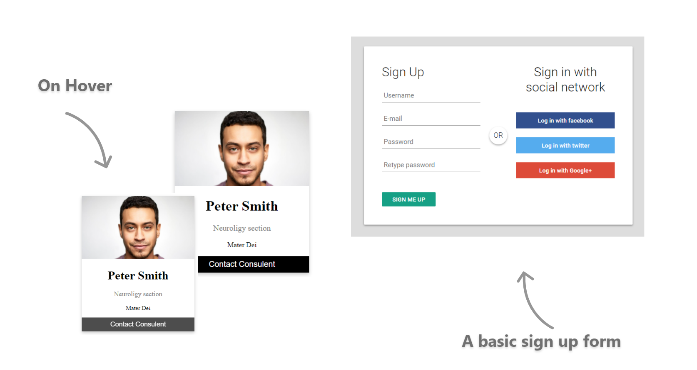

Web Project 1
A website development project for a weather forecast website that I had to design and develop for an assignment. The above image shows a few samples from the website.
Tools used for design & development: HTML5, CSS, JavaScript & Adobe XD.

Web Project 2
A creation of a basic sign up form, and a simple profile card.
Tools used for design & development: HTML5, CSS, JavaScript & Adobe XD.

Web Project 3
A website that displays three separate gaming character profile cards. These profile cards animate down on hover. The video game Cyberpunk 2077 inspired this creation.
Tools used for development: HTML5, CSS & JavaScript.
UI/UX Design Project 1
A restaurant website design project that I had to complete for an assignment. The responsive website design was created for both desktop and smartphone layouts.
Tools used for design: Adobe XD.
UI/UX Design Project 2
A design sample for a retail estate website.
Tools used for design: Adobe XD.
UI/UX Design Project 3
A smartphone design for a mobile application that was completed for an assignment. The Spotify music application served as an inspiraiton for the design process of this application.
Tools used for design: Adobe XD, Adobe Illustrator & Adobe Photoshop.

Logo & Icon Designs
A smartphone design for a mobile application that was completed for an assignment. The Spotify music application served as an inspiraiton for the design process of this application.
Tools used for design: Adobe XD, Adobe Illustrator & Adobe Photoshop.